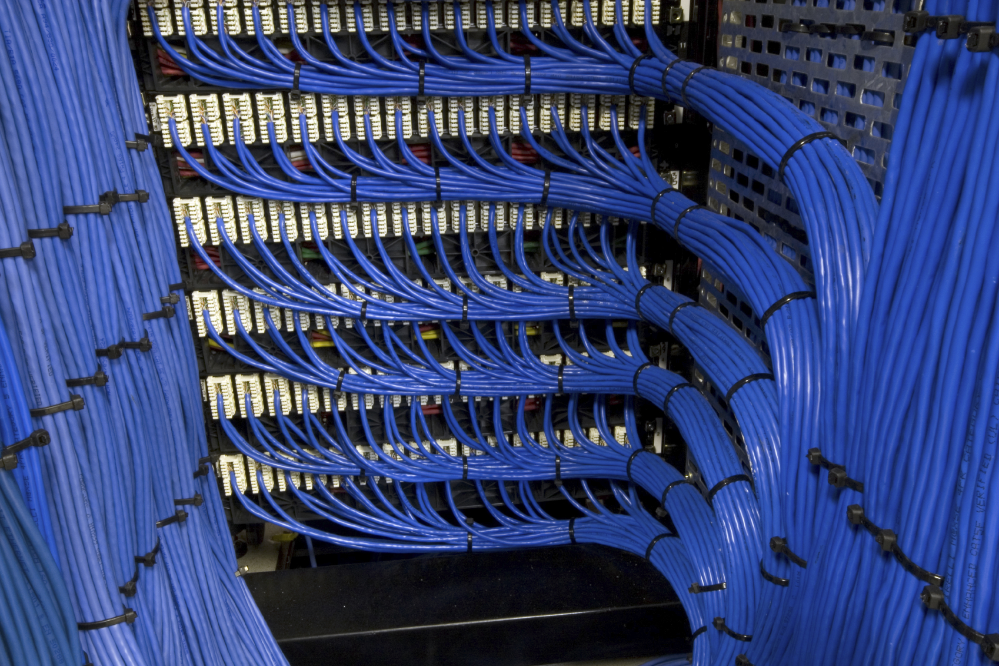

REDES ESTRUTURADAS:
- Implantação de redes 5E, 6 e 6ª;
- Identificação de pontos e diagramação do projeto;
- Certificação;
Por definição, um sistema estruturado baseia-se na disposição de uma rede de cabos que suporte qualquer equipamento de telecomunicações (todos os sistemas de sinais de baixa tensão que conduzam informações dentro dos edifícios, tais como voz, dados, imagem, segurança, etc.) e que possa ser facilmente redirecionada, no sentido de prover um caminho de transmissão entre quaisquer pontos desta rede.
Um sistema estruturado dessa forma garante a flexibilidade e facilidade de manutenção. Com esta solução, é possível eliminar os cabos desnecessários, já que é feito um remanejamento na estrutura da rede. Uma infraestrutura com cabeamento estruturado comporta as mais variadas aplicações, pois, sendo uma rede física com capacidade de suportar sinais de voz, dados, imagem e sinais de controle, tem uma ampla gama de usos, independentemente do tipo de aplicação (comercial, industrial ou residencial), propiciando desde controle de sistemas industriais, interligação de sistemas de segurança, controle de acesso, sistemas multimídia, vídeo conferência etc. nas categorias 5E, 6 e 6A, Fibra, Óptica e Redes Telefônicas no padrão Telebrás para prédios comerciais e residenciais, além de atender a todos os requisitos dos órgãos reguladores.